import pandas as pd
import numpy as np
import matplotlib.pyplot as plt
import matplotlib.colors as mcolors
import seaborn as sns
from sklearn.model_selection import (train_test_split, KFold, cross_val_score,cross_validate, validation_curve,
GridSearchCV, RandomizedSearchCV)
from sklearn.metrics import mean_squared_error, r2_score
from sklearn.preprocessing import LabelEncoder, StandardScaler
from sklearn.pipeline import Pipeline
from sklearn.tree import DecisionTreeRegressor
from sklearn.ensemble import RandomForestRegressor
from sklearn.svm import SVR
from scipy.stats import randintTutorial 9 - Métodos Avançados de Regressão
Introdução
No Tutorial 7 treinamos três modelos de regressão (Árvore de Decisão, Random Forest e SVR) para prever o preço dos móveis da IKEA. Para avaliá-los, usamos uma única divisão entre treino e teste e deixamos todos os modelos com seus parâmetros padrão.
Neste tutorial vamos dar dois passos adiante:
- Validação cruzada k-fold (k-fold cross validation): uma forma mais robusta de estimar o desempenho de um modelo, que não depende da “sorte” de uma única divisão treino/teste.
- Otimização de hiperparâmetros (hyperparameter optimization): procurar, de forma sistemática, a configuração de cada modelo que produz o melhor desempenho, usando a validação cruzada como juiz.
Carregando os pacotes
minha_palette = ["#ffbe0b", "#3a86ff","#fb5607","#8338ec", "#ff006e"]
# Configuração estética padrão
sns.set_style("dark")
sns.set_palette(minha_palette)
# Mapa de cores contínuo com duas cores da paleta (usado nos heatmaps)
meu_cmap = mcolors.LinearSegmentedColormap.from_list("dois_tons", minha_palette[:2])Lendo e preparando os dados
Usaremos o mesmo dataset da IKEA do Tutorial 7. Como a limpeza e a exploração dos dados já foram feitas lá, vamos apenas repetir os passos de preparação de forma resumida:
- selecionar as colunas de interesse e remover os valores
NULL; - eliminar a coluna
sellable_online(quase todos os produtos são vendidos online); - transformar o preço com
log10; - codificar a coluna categórica
category.
df = pd.read_csv('https://raw.githubusercontent.com/rfordatascience/tidytuesday/master/data/2020/2020-11-03/ikea.csv')
ikea = df[['price','category','depth','height','width']].dropna()
ikea['log_price'] = np.log10(ikea['price'])
ikea = ikea.drop(['price'], axis=1)
label_encoder = LabelEncoder()
ikea['category_encoded'] = label_encoder.fit_transform(ikea['category'])
ikea = ikea.drop('category', axis=1)
ikea.info()<class 'pandas.DataFrame'>
Index: 1899 entries, 3 to 3688
Data columns (total 5 columns):
# Column Non-Null Count Dtype
--- ------ -------------- -----
0 depth 1899 non-null float64
1 height 1899 non-null float64
2 width 1899 non-null float64
3 log_price 1899 non-null float64
4 category_encoded 1899 non-null int64
dtypes: float64(4), int64(1)
memory usage: 89.0 KBikea.head()| depth | height | width | log_price | category_encoded | |
|---|---|---|---|---|---|
| 3 | 50.0 | 100.0 | 60.0 | 1.838849 | 0 |
| 4 | 60.0 | 43.0 | 74.0 | 2.352183 | 0 |
| 5 | 45.0 | 91.0 | 40.0 | 2.537819 | 0 |
| 6 | 44.0 | 95.0 | 50.0 | 2.110590 | 0 |
| 8 | 44.0 | 95.0 | 50.0 | 2.110590 | 0 |
Agora vamos separar as features (X) e a variável alvo (y) e, assim como no Tutorial 7, reservar 20% dos dados como conjunto de teste.
Important
O conjunto de teste será guardado “no cofre” e só será usado no final do tutorial, para avaliar os modelos já otimizados. Toda a validação cruzada e a busca de hiperparâmetros será feita apenas com os dados de treino. Se usarmos o teste para escolher hiperparâmetros, a avaliação final ficará otimista demais (vazamento de informação).
X = ikea.drop('log_price', axis=1) # Features
y = ikea['log_price'] # Variável alvo
X_train, X_test, y_train, y_test = train_test_split(X, y, test_size=0.2, random_state=42)
print(f'Treino: {X_train.shape[0]} linhas | Teste: {X_test.shape[0]} linhas')Treino: 1519 linhas | Teste: 380 linhasParte 1 - Validação Cruzada k-fold
O problema de uma única divisão treino/teste
No Tutorial 7 usamos random_state=42 para dividir os dados. Mas o que acontece se mudarmos esse número? Vamos treinar a mesma árvore de decisão com 20 divisões aleatórias diferentes e observar o R² obtido em cada uma.
r2_divisoes = []
for seed in range(20):
X_tr, X_te, y_tr, y_te = train_test_split(X, y, test_size=0.2, random_state=seed)
modelo = DecisionTreeRegressor(random_state=42).fit(X_tr, y_tr)
r2_divisoes.append(r2_score(y_te, modelo.predict(X_te)))
print(f'R² mínimo: {min(r2_divisoes):.3f}')
print(f'R² máximo: {max(r2_divisoes):.3f}')
print(f'R² médio : {np.mean(r2_divisoes):.3f} ± {np.std(r2_divisoes):.3f}')R² mínimo: 0.701
R² máximo: 0.829
R² médio : 0.776 ± 0.034#para interpolar duas cores do minha_palette para produzir 20 cores para o plt.bar
cores_barras = [meu_cmap(i / 19) for i in range(20)]plt.bar(range(20), r2_divisoes, color=cores_barras)
plt.axhline(np.mean(r2_divisoes), color=minha_palette[4], linestyle='--', label='Média')
plt.xlabel('random_state da divisão')
plt.ylabel('R² no teste')
plt.title('O mesmo modelo, 20 divisões diferentes')
plt.legend()
plt.show()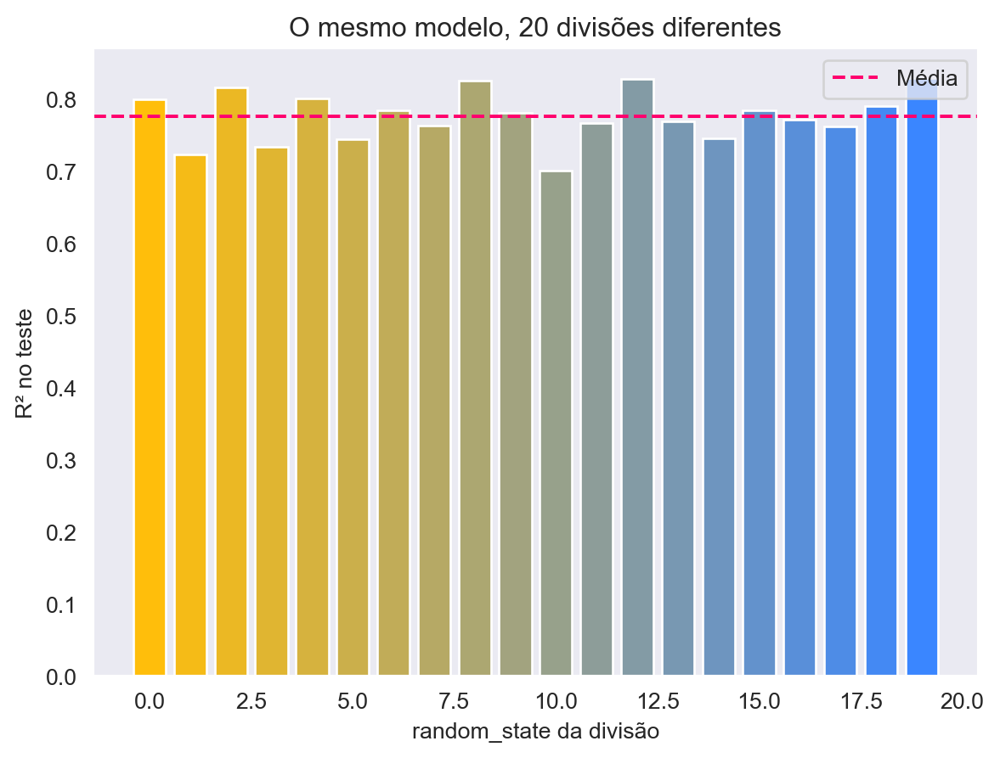
O mesmo modelo apresenta desempenhos diferentes dependendo de quais linhas caíram no teste. Uma única divisão nos dá uma estimativa “ruidosa”: podemos ter tido sorte (ou azar). A validação cruzada resolve isso de forma sistemática.
Como funciona o k-fold
Na validação cruzada k-fold, os dados de treino são divididos em k partes (folds) de tamanho aproximadamente igual. Em seguida:
- treinamos o modelo com k-1 folds;
- avaliamos no fold que ficou de fora (fold de validação);
- repetimos o processo k vezes, de modo que cada fold seja usado exatamente uma vez como validação;
- o desempenho final é a média (e o desvio padrão) das k avaliações.
Assim, todas as observações são usadas tanto para treinar quanto para validar, e obtemos também uma medida da variabilidade do desempenho. Valores comuns são k = 5 ou k = 10.
Vamos criar o objeto KFold com k = 5. O argumento shuffle=True embaralha as linhas antes de dividir, o que é importante caso os dados estejam ordenados de alguma forma (por exemplo, por categoria).
kf = KFold(n_splits=5, shuffle=True, random_state=42)Vamos visualizar como as linhas do conjunto de treino são distribuídas entre os folds. Cada linha do gráfico é uma iteração; em amarelo as observações usadas para treino e em azul as usadas para validação.
n = len(X_train)
matriz_folds = np.zeros((5, n))
for i, (idx_treino, idx_valid) in enumerate(kf.split(X_train)):
matriz_folds[i, idx_valid] = 1
plt.figure(figsize=(10, 3))
plt.imshow(matriz_folds, aspect='auto', cmap=meu_cmap, interpolation='nearest')
plt.yticks(range(5), [f'Iteração {i+1}' for i in range(5)])
plt.xlabel('Índice da observação no conjunto de treino')
plt.title('Divisão em 5 folds (amarelo = treino, azul = validação)')
plt.show()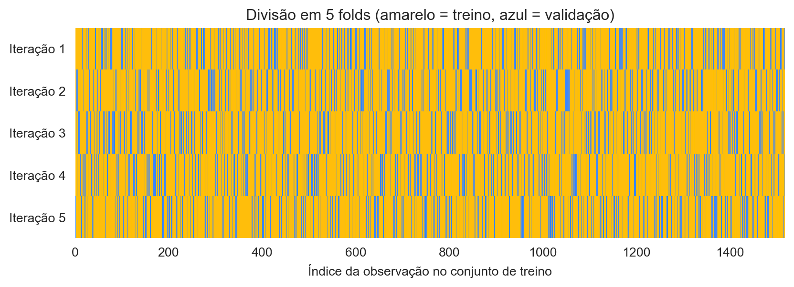
Como o gráfico ficou muito difícil de apreciar, vamos pegar apenas uma porção dos dados de treino e refazer a mesma figura.
# 1. Define os 10% do tamanho dos dados de treino
n = int(len(X_train) * 0.02)
# 2. Cria a matriz com o tamanho reduzido (5x20) para 5 iterações e n colunas
matriz_folds = np.zeros((5, n))
# 3. FATIA o X_train para que o K-Fold use apenas esses 10%
X_train_reduzido = X_train[:n]
# 4. Alimenta o split com os dados já reduzidos
for i, (idx_treino, idx_valid) in enumerate(kf.split(X_train_reduzido)):
# Agora idx_valid conterá apenas índices entre 0 e n-1, encaixando perfeitamente na matriz
matriz_folds[i, idx_valid] = 1
# 5. Plota o gráfico idêntico ao original, mas agora em escala menor
plt.figure(figsize=(10, 3))
plt.imshow(matriz_folds, aspect='auto', cmap=meu_cmap, interpolation='nearest')
plt.yticks(range(5), [f'Iteração {i+1}' for i in range(5)])
plt.xlabel('Índice da observação no conjunto de treino (2%)')
plt.title('Divisão em 5 folds (amarelo = treino, azul = validação)')
plt.show()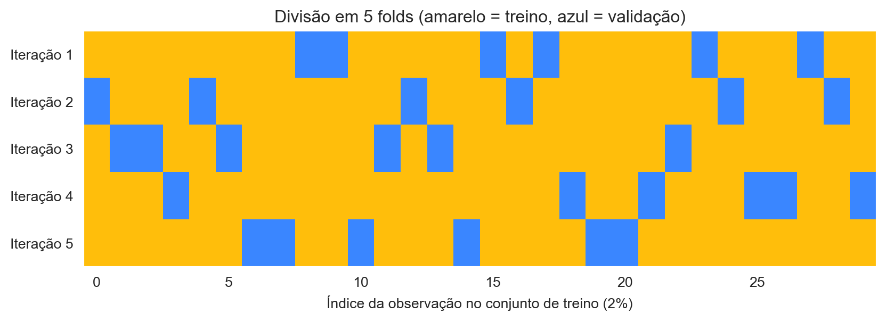
Implementando o k-fold “na mão”
Para entender o que acontece por dentro, vamos primeiro fazer a validação cruzada com um laço for, treinando uma árvore de decisão em cada iteração.
resultados_folds = []
for i, (idx_treino, idx_valid) in enumerate(kf.split(X_train)):
X_tr, X_val = X_train.iloc[idx_treino], X_train.iloc[idx_valid]
y_tr, y_val = y_train.iloc[idx_treino], y_train.iloc[idx_valid]
modelo = DecisionTreeRegressor(random_state=42)
modelo.fit(X_tr, y_tr)
y_pred_val = modelo.predict(X_val)
resultados_folds.append({
'Fold': i + 1,
'R2': r2_score(y_val, y_pred_val),
'RMSE': np.sqrt(mean_squared_error(y_val, y_pred_val))
})
resultados_folds = pd.DataFrame(resultados_folds)
resultados_folds| Fold | R2 | RMSE | |
|---|---|---|---|
| 0 | 1 | 0.701384 | 0.278635 |
| 1 | 2 | 0.809354 | 0.227763 |
| 2 | 3 | 0.782268 | 0.249044 |
| 3 | 4 | 0.768930 | 0.250347 |
| 4 | 5 | 0.727757 | 0.278698 |
print(f"R² médio : {resultados_folds['R2'].mean():.3f} ± {resultados_folds['R2'].std():.3f}")
print(f"RMSE médio: {resultados_folds['RMSE'].mean():.3f} ± {resultados_folds['RMSE'].std():.3f}")R² médio : 0.758 ± 0.043
RMSE médio: 0.257 ± 0.022Usando cross_val_score
O scikit-learn faz todo esse laço em uma única linha com a função cross_val_score. Basta informar o modelo, os dados, a estratégia de divisão (cv) e a métrica (scoring).
scores_tree = cross_val_score(DecisionTreeRegressor(random_state=42),
X_train, y_train, cv=kf, scoring='r2')
print('R² em cada fold:', np.round(scores_tree, 3))
print(f'R² médio: {scores_tree.mean():.3f} ± {scores_tree.std():.3f}')R² em cada fold: [0.701 0.809 0.782 0.769 0.728]
R² médio: 0.758 ± 0.039Os valores são os mesmos obtidos no laço manual, pois usamos o mesmo objeto kf.
Várias métricas com cross_validate
Se quisermos calcular mais de uma métrica ao mesmo tempo, usamos cross_validate. Um detalhe importante: o scikit-learn sempre maximiza os scores. Por isso, métricas de erro (onde menor é melhor) aparecem com o sinal negativo, por exemplo neg_root_mean_squared_error. Basta multiplicar por -1 para voltar ao valor usual.
cv_tree = cross_validate(DecisionTreeRegressor(random_state=42), X_train, y_train, cv=kf,
scoring=['r2', 'neg_root_mean_squared_error'],
return_train_score=True)
pd.DataFrame(cv_tree)| fit_time | score_time | test_r2 | train_r2 | test_neg_root_mean_squared_error | train_neg_root_mean_squared_error | |
|---|---|---|---|---|---|---|
| 0 | 0.002760 | 0.000699 | 0.701384 | 0.991224 | -0.278635 | -0.049492 |
| 1 | 0.002478 | 0.000753 | 0.809354 | 0.991877 | -0.227763 | -0.047352 |
| 2 | 0.002416 | 0.000948 | 0.782268 | 0.991207 | -0.249044 | -0.049034 |
| 3 | 0.002548 | 0.000682 | 0.768930 | 0.993231 | -0.250347 | -0.043272 |
| 4 | 0.002583 | 0.000647 | 0.727757 | 0.992269 | -0.278698 | -0.045952 |
Note que as colunas train_r2 são praticamente iguais a 1: a árvore sem restrições decora os dados de treino, mas tem um desempenho bem pior nos folds de validação (test_r2). Esse é um sinal claro de overfitting, que vamos atacar com a otimização de hiperparâmetros.
Comparando os modelos do Tutorial 7 com validação cruzada
Agora vamos avaliar os três modelos do Tutorial 7 (com parâmetros padrão) usando 5-fold CV.
Note
Atenção com o SVR: o SVR precisa que os dados estejam normalizados. Se normalizarmos todo o X_train antes da validação cruzada, o StandardScaler “enxerga” os dados dos folds de validação, o que é um vazamento de informação. A solução é usar um Pipeline: dessa forma o scaler é ajustado apenas com os folds de treino em cada iteração.
modelos = {
'Decision Tree': DecisionTreeRegressor(random_state=42),
'Random Forest': RandomForestRegressor(random_state=42, n_jobs=-1),
'SVR': Pipeline([('scaler', StandardScaler()),
('svr', SVR(kernel='rbf'))])
}
resultados_cv = []
for nome, modelo in modelos.items():
scores = cross_val_score(modelo, X_train, y_train, cv=kf, scoring='r2')
for fold, s in enumerate(scores):
resultados_cv.append({'Modelo': nome, 'Fold': fold + 1, 'R2': s})
print(f'{nome:15s} R² = {scores.mean():.3f} ± {scores.std():.3f}')
resultados_cv = pd.DataFrame(resultados_cv)Decision Tree R² = 0.758 ± 0.039
Random Forest R² = 0.857 ± 0.022
SVR R² = 0.752 ± 0.025Vamos visualizar a distribuição do R² nos 5 folds para cada modelo:
sns.boxplot(data=resultados_cv, x='Modelo', y='R2', hue='Modelo')
sns.stripplot(data=resultados_cv, x='Modelo', y='R2', color='black', size=6)
plt.title('R² na validação cruzada (5 folds) - parâmetros padrão')
plt.show()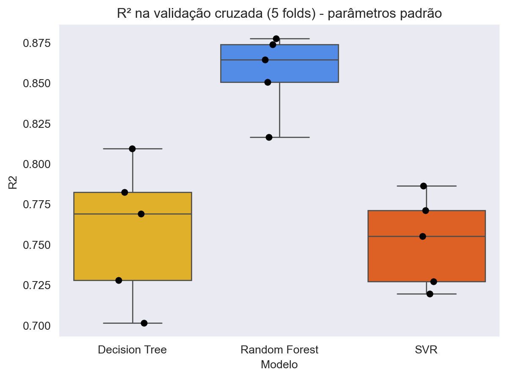
O boxplot mostra não só qual modelo é melhor em média, mas também o quão estável ele é entre os folds.
Qual valor de k usar?
A escolha de k é um equilíbrio: com k maior, cada modelo é treinado com mais dados (estimativa menos pessimista), mas o custo computacional aumenta porque treinamos k modelos. Vamos comparar k = 3, 5, 10 e 20 para a árvore de decisão.
resultados_k = []
for k in [3, 5, 10, 20]:
cv_k = KFold(n_splits=k, shuffle=True, random_state=42)
scores = cross_val_score(DecisionTreeRegressor(random_state=42),
X_train, y_train, cv=cv_k, scoring='r2')
resultados_k.append({'k': k, 'R2 médio': scores.mean(), 'Desvio padrão': scores.std()})
pd.DataFrame(resultados_k)| k | R2 médio | Desvio padrão | |
|---|---|---|---|
| 0 | 3 | 0.717801 | 0.018056 |
| 1 | 5 | 0.757939 | 0.038641 |
| 2 | 10 | 0.738559 | 0.057041 |
| 3 | 20 | 0.771819 | 0.068037 |
Na prática, k = 5 ou k = 10 costumam oferecer um bom compromisso. Vamos seguir com k = 5.
Parte 2 - Otimização de Hiperparâmetros
Parâmetros vs. hiperparâmetros
- Parâmetros são aprendidos pelo modelo durante o treino (por exemplo, os pontos de corte de cada nó de uma árvore, ou os coeficientes de uma regressão).
- Hiperparâmetros são definidos antes do treino e controlam como o modelo aprende. Alguns exemplos:
| Modelo | Hiperparâmetro | O que controla |
|---|---|---|
| Decision Tree | max_depth |
Profundidade máxima da árvore |
| Decision Tree | min_samples_leaf |
Número mínimo de observações em cada folha |
| Random Forest | n_estimators |
Número de árvores da floresta |
| Random Forest | max_features |
Número de features sorteadas em cada divisão |
| SVR | C |
Penalização dos erros (regularização) |
| SVR | gamma |
Alcance da influência de cada ponto no kernel RBF |
| SVR | epsilon |
Largura da “margem” dentro da qual erros não são penalizados |
Otimizar hiperparâmetros significa testar várias combinações e escolher a que tem o melhor desempenho na validação cruzada.
Curva de validação: um hiperparâmetro de cada vez
Antes de fazer uma busca completa, é útil entender o efeito de um único hiperparâmetro. A função validation_curve calcula o score de treino e de validação (via CV) para vários valores de um hiperparâmetro. Vamos variar o max_depth da árvore de decisão.
profundidades = np.arange(1, 21)
train_scores, valid_scores = validation_curve(
DecisionTreeRegressor(random_state=42), X_train, y_train,
param_name='max_depth', param_range=profundidades,
cv=kf, scoring='r2'
)
plt.plot(profundidades, train_scores.mean(axis=1), 'o-', color=minha_palette[0], label='Treino')
plt.plot(profundidades, valid_scores.mean(axis=1), 'o-', color=minha_palette[1], label='Validação (CV)')
plt.fill_between(profundidades,
valid_scores.mean(axis=1) - valid_scores.std(axis=1),
valid_scores.mean(axis=1) + valid_scores.std(axis=1),
color=minha_palette[1], alpha=0.2)
plt.xlabel('max_depth')
plt.ylabel('R²')
plt.title('Curva de validação - Árvore de Decisão')
plt.legend()
plt.show()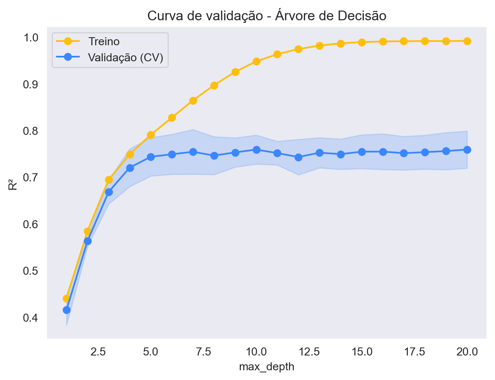
melhor_depth = profundidades[valid_scores.mean(axis=1).argmax()]
print(f'Melhor max_depth pela curva de validação: {melhor_depth}')Melhor max_depth pela curva de validação: 20Este gráfico ilustra o dilema viés-variância:
- com
max_depthpequeno, o modelo é simples demais e erra tanto no treino quanto na validação (underfitting); - com
max_depthgrande, o R² de treino se aproxima de 1, mas o de validação para de melhorar ou até piora (overfitting); - o ponto ideal está onde a curva de validação atinge o máximo.
Grid Search: busca exaustiva
Na prática, os hiperparâmetros interagem entre si, então queremos testar combinações. O GridSearchCV testa todas as combinações de uma grade de valores e avalia cada uma com validação cruzada.
Vamos otimizar dois hiperparâmetros da árvore de decisão: max_depth e min_samples_leaf.
param_grid_tree = {
'max_depth': [3, 5, 7, 9, 11, 13, 15, None],
'min_samples_leaf': [1, 2, 4, 8, 16]
}
n_comb = len(param_grid_tree['max_depth']) * len(param_grid_tree['min_samples_leaf'])
print(f'Combinações: {n_comb} | Modelos treinados: {n_comb * 5}')Combinações: 40 | Modelos treinados: 200grid_tree = GridSearchCV(
DecisionTreeRegressor(random_state=42),
param_grid=param_grid_tree,
cv=kf,
scoring='r2',
n_jobs=-1
)
grid_tree.fit(X_train, y_train)
print('Melhores hiperparâmetros:', grid_tree.best_params_)
print(f'Melhor R² (CV): {grid_tree.best_score_:.3f}')Melhores hiperparâmetros: {'max_depth': 15, 'min_samples_leaf': 4}
Melhor R² (CV): 0.778Todos os resultados ficam guardados no atributo cv_results_. Vamos ver as 10 melhores combinações:
res_tree = pd.DataFrame(grid_tree.cv_results_)
res_tree[['param_max_depth', 'param_min_samples_leaf',
'mean_test_score', 'std_test_score', 'rank_test_score']] \
.sort_values('rank_test_score').head(10)| param_max_depth | param_min_samples_leaf | mean_test_score | std_test_score | rank_test_score | |
|---|---|---|---|---|---|
| 32 | 15 | 4 | 0.777528 | 0.033679 | 1 |
| 37 | None | 4 | 0.777454 | 0.033637 | 2 |
| 27 | 13 | 4 | 0.777453 | 0.033721 | 3 |
| 17 | 9 | 4 | 0.774255 | 0.033282 | 4 |
| 22 | 11 | 4 | 0.772991 | 0.033047 | 5 |
| 28 | 13 | 8 | 0.765638 | 0.042894 | 6 |
| 38 | None | 8 | 0.765638 | 0.042894 | 6 |
| 33 | 15 | 8 | 0.765638 | 0.042894 | 6 |
| 23 | 11 | 8 | 0.763590 | 0.042188 | 9 |
| 18 | 9 | 8 | 0.762269 | 0.043244 | 10 |
Um heatmap facilita a visualização da grade inteira:
tabela_tree = res_tree.pivot_table(index='param_min_samples_leaf',
columns=res_tree['param_max_depth'].astype(str),
values='mean_test_score')
sns.heatmap(tabela_tree, annot=True, fmt='.3f', cmap=meu_cmap)
plt.xlabel('max_depth')
plt.ylabel('min_samples_leaf')
plt.title('R² médio (CV) - Grid Search da Árvore de Decisão')
plt.show()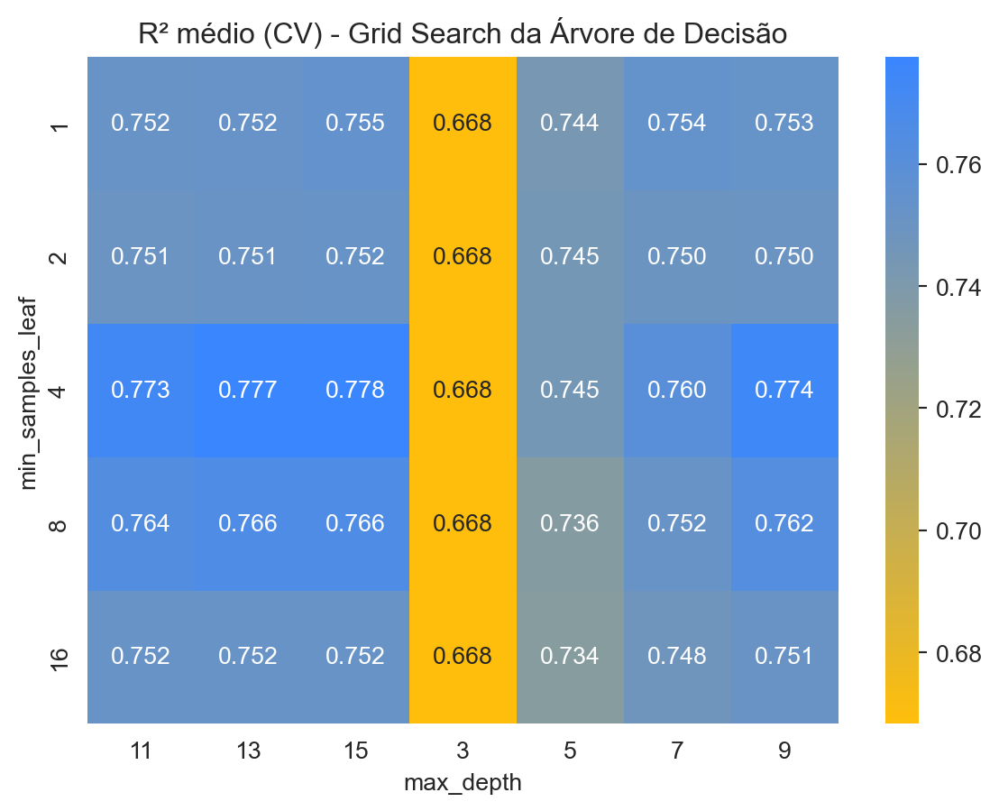
Por padrão (refit=True), após a busca o GridSearchCV treina novamente o modelo com os melhores hiperparâmetros usando todo o conjunto de treino. Esse modelo final fica disponível em best_estimator_.
tree_otimizada = grid_tree.best_estimator_
tree_otimizadaDecisionTreeRegressor(max_depth=15, min_samples_leaf=4, random_state=42)In a Jupyter environment, please rerun this cell to show the HTML representation or trust the notebook.
On GitHub, the HTML representation is unable to render, please try loading this page with nbviewer.org.
Parameters
Randomized Search: busca aleatória
O Grid Search fica caro rapidamente: com 4 hiperparâmetros e 5 valores cada, seriam 5⁴ = 625 combinações × 5 folds = 3125 modelos. Para modelos mais pesados, como o Random Forest, é mais eficiente usar o RandomizedSearchCV, que sorteia um número fixo de combinações (n_iter) a partir de listas ou de distribuições de probabilidade.
Vamos usar a distribuição randint do scipy, que sorteia números inteiros dentro de um intervalo.
param_dist_rf = {
'n_estimators': randint(100, 500),
'max_depth': [None, 5, 10, 15, 20, 30],
'min_samples_leaf': randint(1, 10),
'max_features': [1.0, 'sqrt', 0.5]
}
random_rf = RandomizedSearchCV(
RandomForestRegressor(random_state=42),
param_distributions=param_dist_rf,
n_iter=20, # número de combinações sorteadas
cv=kf,
scoring='r2',
random_state=42,
n_jobs=-1
)
random_rf.fit(X_train, y_train)
print('Melhores hiperparâmetros:', random_rf.best_params_)
print(f'Melhor R² (CV): {random_rf.best_score_:.3f}')Melhores hiperparâmetros: {'max_depth': 15, 'max_features': 1.0, 'min_samples_leaf': 1, 'n_estimators': 413}
Melhor R² (CV): 0.855res_rf = pd.DataFrame(random_rf.cv_results_)
res_rf[['param_n_estimators', 'param_max_depth', 'param_min_samples_leaf',
'param_max_features', 'mean_test_score', 'std_test_score', 'rank_test_score']] \
.sort_values('rank_test_score').head(10)| param_n_estimators | param_max_depth | param_min_samples_leaf | param_max_features | mean_test_score | std_test_score | rank_test_score | |
|---|---|---|---|---|---|---|---|
| 5 | 413 | 15 | 1 | 1.0 | 0.855201 | 0.019540 | 1 |
| 13 | 149 | 10 | 1 | sqrt | 0.853286 | 0.018073 | 2 |
| 18 | 466 | 20 | 2 | 1.0 | 0.849368 | 0.023476 | 3 |
| 10 | 364 | 15 | 2 | 1.0 | 0.848481 | 0.023410 | 4 |
| 1 | 314 | 20 | 3 | 0.5 | 0.842771 | 0.022784 | 5 |
| 8 | 406 | 15 | 3 | 1.0 | 0.841057 | 0.025851 | 6 |
| 7 | 463 | 10 | 3 | 0.5 | 0.838009 | 0.022405 | 7 |
| 16 | 369 | 15 | 4 | sqrt | 0.834745 | 0.023900 | 8 |
| 3 | 408 | 15 | 6 | 0.5 | 0.821886 | 0.025500 | 9 |
| 14 | 153 | 15 | 6 | sqrt | 0.820835 | 0.025617 | 10 |
Vamos ver como o R² variou entre as 20 combinações sorteadas:
res_rf_ord = res_rf.sort_values('mean_test_score')
plt.errorbar(range(len(res_rf_ord)), res_rf_ord['mean_test_score'],
yerr=res_rf_ord['std_test_score'], fmt='o', color=minha_palette[3],
ecolor=minha_palette[0], capsize=3)
plt.xlabel('Combinação (ordenada pelo desempenho)')
plt.ylabel('R² médio (CV) ± desvio padrão')
plt.title('Randomized Search - Random Forest')
plt.show()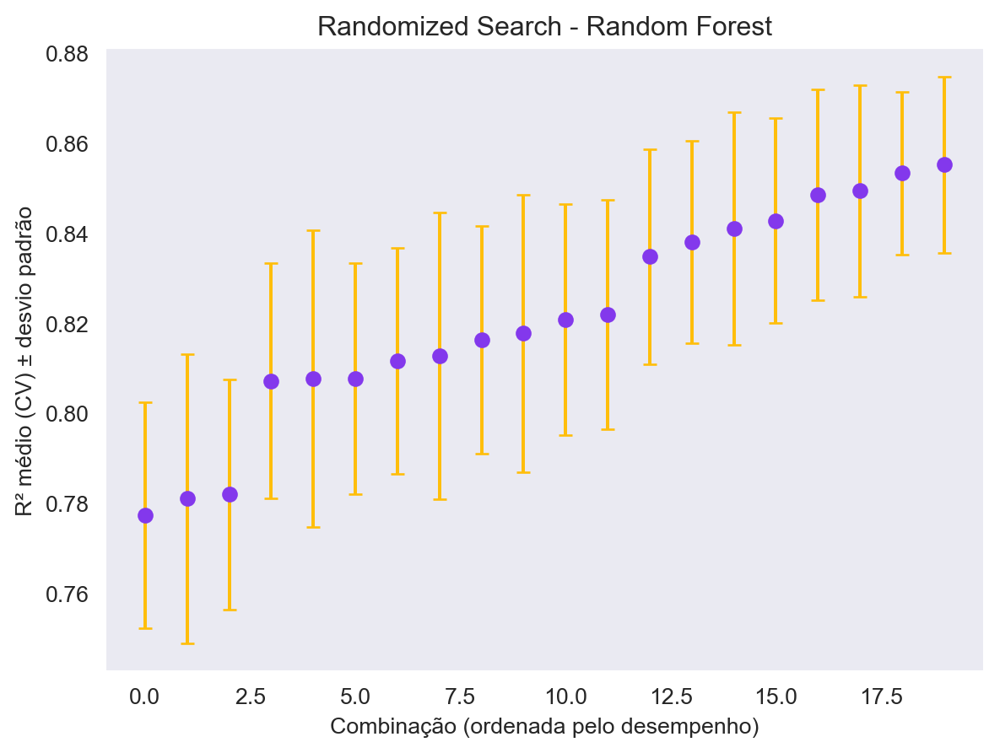
rf_otimizado = random_rf.best_estimator_Grid Search com Pipeline: otimizando o SVR
O SVR é muito sensível aos seus hiperparâmetros C, gamma e epsilon. Esses hiperparâmetros variam em ordens de grandeza, então é comum testar valores em escala logarítmica (por exemplo, 0.1, 1, 10, 100).
Como o modelo está dentro de um Pipeline, os nomes dos hiperparâmetros recebem o prefixo do passo seguido de dois sublinhados: svr__C, svr__gamma, etc.
pipe_svr = Pipeline([('scaler', StandardScaler()),
('svr', SVR(kernel='rbf'))])
param_grid_svr = {
'svr__C': [0.1, 1, 10, 100],
'svr__gamma': [0.01, 0.1, 1, 10],
'svr__epsilon': [0.01, 0.1]
}
grid_svr = GridSearchCV(pipe_svr, param_grid=param_grid_svr,
cv=kf, scoring='r2', n_jobs=-1)
grid_svr.fit(X_train, y_train)
print('Melhores hiperparâmetros:', grid_svr.best_params_)
print(f'Melhor R² (CV): {grid_svr.best_score_:.3f}')Melhores hiperparâmetros: {'svr__C': 1, 'svr__epsilon': 0.01, 'svr__gamma': 1}
Melhor R² (CV): 0.778Vamos visualizar o efeito conjunto de C e gamma (fixando o melhor epsilon):
res_svr = pd.DataFrame(grid_svr.cv_results_)
melhor_eps = grid_svr.best_params_['svr__epsilon']
tabela_svr = res_svr[res_svr['param_svr__epsilon'] == melhor_eps] \
.pivot_table(index='param_svr__C', columns='param_svr__gamma', values='mean_test_score')
sns.heatmap(tabela_svr, annot=True, fmt='.3f', cmap=meu_cmap)
plt.xlabel('gamma')
plt.ylabel('C')
plt.title(f'R² médio (CV) - SVR (epsilon = {melhor_eps})')
plt.show()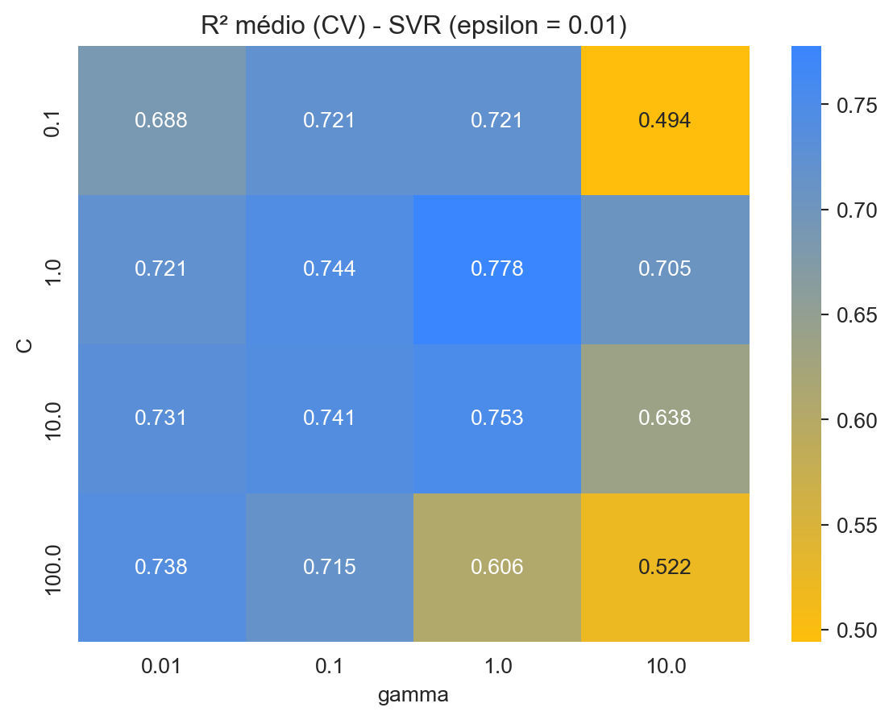
Note como combinações ruins de C e gamma podem produzir um desempenho muito inferior: por isso o SVR com parâmetros padrão raramente é a melhor versão do modelo.
svr_otimizado = grid_svr.best_estimator_Validação cruzada aninhada (nested cross validation)
Um ponto sutil: o best_score_ de uma busca é a média da CV da melhor combinação entre muitas testadas, então ele tende a ser um pouco otimista (escolhemos o máximo, que carrega um pouco de sorte). Para obter uma estimativa sem viés do processo completo “busca + treino”, podemos usar a validação cruzada aninhada:
- um laço interno de CV escolhe os hiperparâmetros (o
GridSearchCV); - um laço externo de CV avalia o desempenho do modelo escolhido em dados que não participaram da busca.
No scikit-learn, basta passar o objeto GridSearchCV para o cross_val_score:
cv_interno = KFold(n_splits=5, shuffle=True, random_state=1)
cv_externo = KFold(n_splits=5, shuffle=True, random_state=2)
busca_tree = GridSearchCV(DecisionTreeRegressor(random_state=42),
param_grid=param_grid_tree, cv=cv_interno,
scoring='r2', n_jobs=-1)
scores_aninhados = cross_val_score(busca_tree, X_train, y_train,
cv=cv_externo, scoring='r2')
print('R² em cada fold externo:', np.round(scores_aninhados, 3))
print(f'R² da CV aninhada : {scores_aninhados.mean():.3f} ± {scores_aninhados.std():.3f}')
print(f'best_score_ (CV simples): {grid_tree.best_score_:.3f}')R² em cada fold externo: [0.664 0.753 0.826 0.781 0.711]
R² da CV aninhada : 0.747 ± 0.056
best_score_ (CV simples): 0.778A CV aninhada é mais cara computacionalmente (aqui treinamos 5 × 40 × 5 = 1000 árvores), por isso a aplicamos apenas à árvore de decisão, que é rápida.
Parte 3 - Avaliação final no conjunto de teste
Finalmente vamos “abrir o cofre” e avaliar no conjunto de teste os modelos padrão (como no Tutorial 7) e os modelos otimizados. Para evitar repetir código, vamos criar uma função que calcula os mesmos indicadores do Tutorial 7.
def avaliar(modelo, nome, versao):
y_pred = modelo.predict(X_test)
mse = mean_squared_error(y_test, y_pred)
return {'R2': r2_score(y_test, y_pred),
'MSE': mse,
'RMSE': np.sqrt(mse),
'Modelo': nome,
'Versão': versao}Treinamos os modelos padrão com todo o conjunto de treino (os otimizados já foram treinados pelo refit das buscas):
for modelo in modelos.values():
modelo.fit(X_train, y_train)
otimizados = {
'Decision Tree': tree_otimizada,
'Random Forest': rf_otimizado,
'SVR': svr_otimizado
}linhas = []
for nome in modelos:
linhas.append(avaliar(modelos[nome], nome, 'Padrão'))
linhas.append(avaliar(otimizados[nome], nome, 'Otimizado'))
indicadores = pd.DataFrame(linhas)
indicadores| R2 | MSE | RMSE | Modelo | Versão | |
|---|---|---|---|---|---|
| 0 | 0.763251 | 0.074327 | 0.272629 | Decision Tree | Padrão |
| 1 | 0.812646 | 0.058819 | 0.242527 | Decision Tree | Otimizado |
| 2 | 0.853280 | 0.046062 | 0.214621 | Random Forest | Padrão |
| 3 | 0.853653 | 0.045945 | 0.214348 | Random Forest | Otimizado |
| 4 | 0.792801 | 0.065049 | 0.255048 | SVR | Padrão |
| 5 | 0.771713 | 0.071670 | 0.267713 | SVR | Otimizado |
Vamos comparar lado a lado o R² e o RMSE de cada versão:
fig, axes = plt.subplots(1, 2, figsize=(11, 4))
sns.barplot(data=indicadores, x='Modelo', y='R2', hue='Versão',
palette=[minha_palette[0], minha_palette[1]], ax=axes[0])
axes[0].set_title('R² no teste (maior é melhor)')
axes[0].set_ylim(0, 1)
sns.barplot(data=indicadores, x='Modelo', y='RMSE', hue='Versão',
palette=[minha_palette[0], minha_palette[1]], ax=axes[1])
axes[1].set_title('RMSE no teste (menor é melhor)')
plt.tight_layout()
plt.show()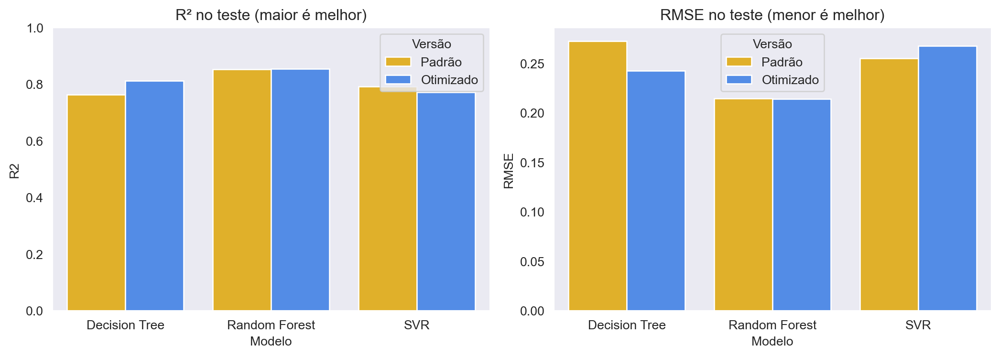
E o mesmo gráfico comparativo RMSE x R² do Tutorial 7, agora incluindo as versões otimizadas:
fig = sns.scatterplot(data=indicadores, x='R2', y='RMSE', hue='Modelo',
style='Versão', s=150)
fig.set_xlim(0.5, 1)
fig.set_ylim(0, 0.4)
plt.title('Gráfico comparativo entre os indicadores RMSE x R2')
plt.show()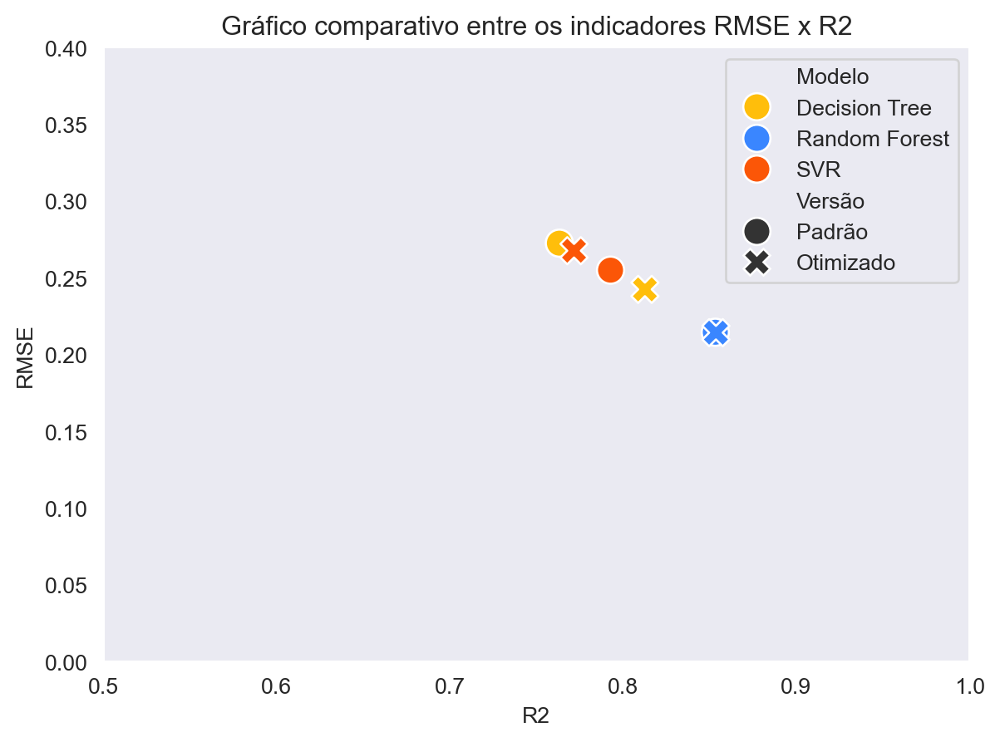
Por fim, o gráfico de valores verdadeiros vs. preditos para o melhor modelo:
melhor = indicadores.sort_values('R2', ascending=False).iloc[0]
modelo_final = otimizados[melhor['Modelo']] if melhor['Versão'] == 'Otimizado' else modelos[melhor['Modelo']]
y_pred_final = modelo_final.predict(X_test)
plt.scatter(y_test, y_pred_final, alpha=0.5, color=minha_palette[3])
plt.xlabel("Log Preço verdadeiro (y_test)")
plt.ylabel("Log Preço predito (y_pred)")
plt.title(f"Melhor modelo: {melhor['Modelo']} ({melhor['Versão']})")
# Adicionar linha diagonal
plt.plot([min(y_test), max(y_test)], [min(y_test), max(y_test)], color='red', linestyle='--')
plt.show()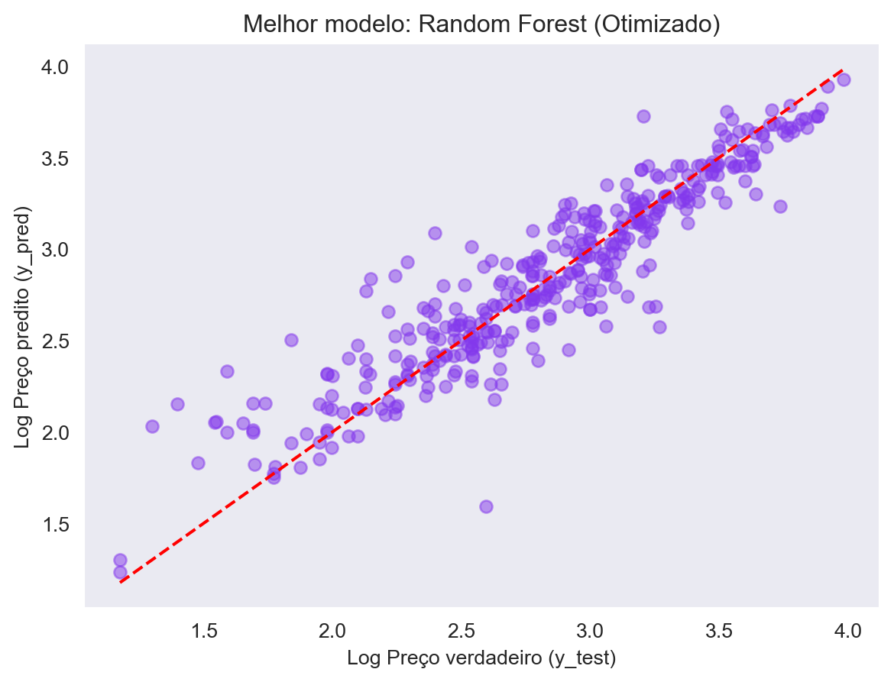
Resumo
- Uma única divisão treino/teste gera uma estimativa de desempenho ruidosa, que depende de quais observações caíram em cada conjunto.
- A validação cruzada k-fold usa todas as observações para treinar e validar, retornando uma média e um desvio padrão do desempenho. As funções principais são
KFold,cross_val_scoreecross_validate. - Etapas de pré-processamento (como o
StandardScaler) devem ficar dentro de umPipeline, para serem ajustadas apenas nos folds de treino. - Hiperparâmetros são escolhidos antes do treino. A
validation_curvemostra o efeito de um hiperparâmetro e ajuda a identificar underfitting e overfitting. - O
GridSearchCVtesta todas as combinações de uma grade; oRandomizedSearchCVsorteia um número fixo de combinações e é mais eficiente para espaços grandes. - A CV aninhada fornece uma estimativa sem viés do desempenho do processo completo de otimização.
- O conjunto de teste só deve ser usado no final, para a avaliação definitiva dos modelos escolhidos.
Exercícios
- Repita a validação cruzada dos modelos padrão usando
KFold(n_splits=10). O ranking dos modelos muda? - Faça a curva de validação do Random Forest variando
n_estimatorsde 10 a 300. A partir de quantas árvores o ganho deixa de ser relevante? - Troque o
GridSearchCVdo SVR por umRandomizedSearchCVusandoscipy.stats.loguniform(1e-2, 1e2)paraCegamma. Você consegue um resultado melhor com o mesmo número de modelos treinados? - Altere o
scoringdas buscas para'neg_root_mean_squared_error'. Os melhores hiperparâmetros encontrados são os mesmos?